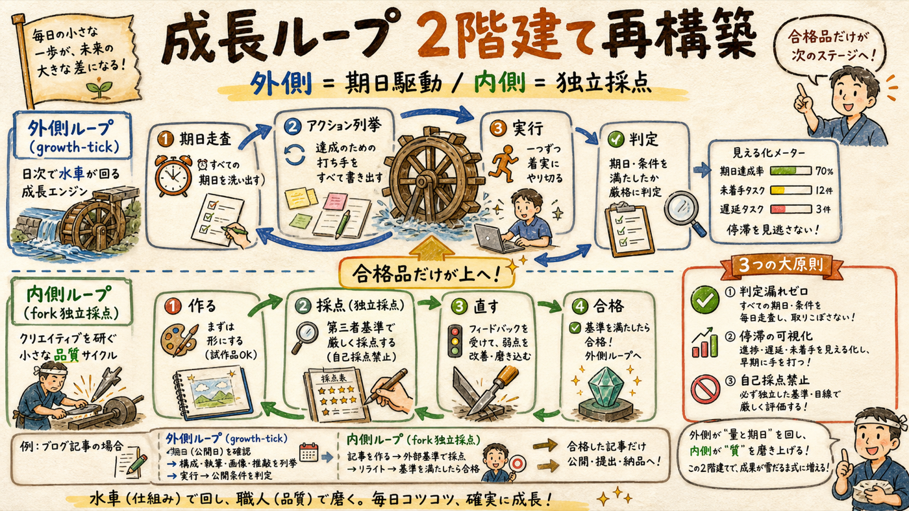
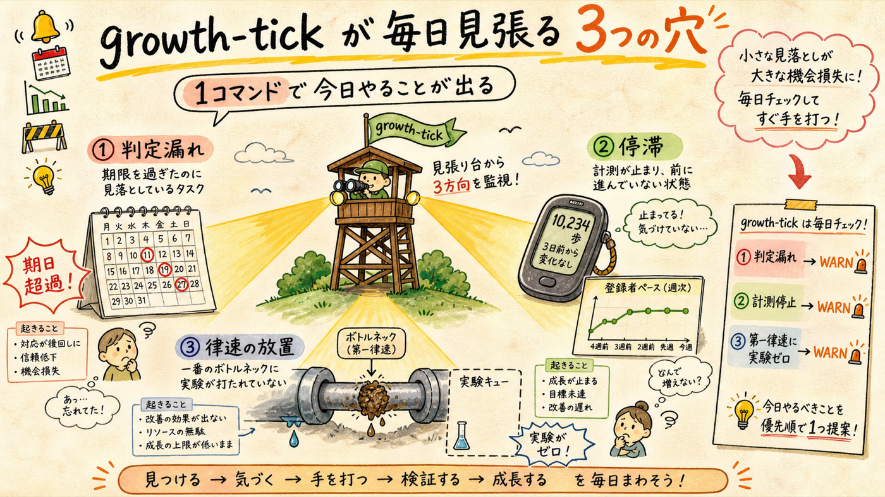
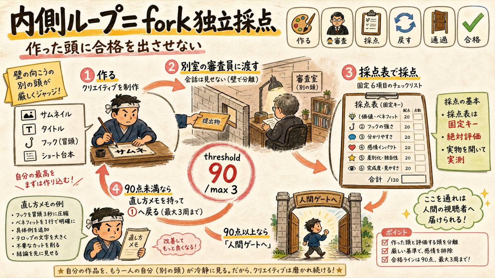

登録1000人ハーネス（growth-state / growth-loop / pdca）の上に、判定漏れ・停滞・自己採点の3穴を機械的に塞ぐ層を実装しました。初回実行で判定負債4件を即検出しています。
node scripts/growth-tick.mjs が毎日「今日やるべき判定・制作」を機械列挙（judge_due走査＋律速台帳照合＋登録ペース）既存ハーネスは「計測→診断→提案→判定」の部品は揃っていたが、部品をつなぐ時計と審査員がいなかった。

今回の再接地で見つかった既存ループの本当の弱点は、診断の質ではなく「ループが止まっても誰も気づかない」ことでした。判定期日が自由記述（check_after: "2026-07-15（最長2週間…）"）で人間の記憶頼み。実際に H-CTR-1 は判定期日6/23を9日過ぎ、metrics-snapshot は16日止まっていました。
| 層 | 新設物 | 塞ぐ穴 |
|---|---|---|
| 外側ループ | scripts/growth-tick.mjs ＋ lib/tick.mjs（テスト12本） | 判定漏れ・停滞・律速の放置 |
| 律速台帳 | analytics/bottleneck.json（SSOT） | 「第一律速に実験が張られていない」状態と診断の鮮度切れ（30日で再接地強制） |
| 内側ループ | analytics/eval-schemas/ 4種（サムネ/タイトル/フック/ショート台本） | 作った頭の自己採点 |
| 規律 | judge_due 事前登録ルール（runbook＋CLAUDE.md焼き込み） | 「公開+7日」のような機械が読めない期日 |
成長セッションの入口が growth-state 単体から growth-tick（growth-state内包）へ。「推測で動かない」に「忘れずに動く」が加わった。

2026-07-02 の実出力（実データ・脚色なし）:
━━━ 🔄 growth-tick @ 2026-07-02 ━━━ 🎯 第一律速: 本編CTR（中央値0.9%・健全4-6%の1/4） — サムネ視認性 📈 登録 66/1000（残り934） / 直近16日 +9（0.56/日） / 到達まで約1661日 --- 📌 今日のアクション 33件 --- 🔔 H-CTR-1: 判定期日超過9日 → yt-ctr取得後 growth-loop judge ⏳ H42: 判定まで残り13日（2026-07-15） 🎬 H35/H37: コホート未成立(0/3) → 仮説適用ショートの制作が次アクション 📋 coordタスク期日超過 28件（5件表示+集約） --- 🚩 停滞・規律フラグ --- [WARN] judge-overdue / coord-tasks-overdue / measurement-stale
設計の要点: 期日は judge_due（ISO日付・実験claim時に必須）を第一に読み、無ければ check_after の自由記述から日付抽出にフォールバック。律速台帳と実験台帳を突き合わせ、第一律速に実験ゼロや診断が30日超え（再接地せよ）も警告します。
律速はCTR 0.9%と冒頭離脱＝クリエイティブの質そのもの。外側を何周回しても、1周で出すクリエイティブが弱ければ不合格が並ぶだけ。

採点表は4種、各6軸・重み合計100点・breakdownキーは周回をまたいで固定。criteriaは実測データから「数えられる事実」に翻訳してあります（例: サムネ=360px実寸で1行7字以内×2行・明るい焦点1点、フック=1文目が損得の断定・最初の90字に前置きなし＝L11実測「冒頭7-18秒で40-45%離脱」への直接対応）。
| 採点表 | 対応する律速 | 採点の骨子（抜粋） |
|---|---|---|
| thumbnail.json | 第一律速: CTR 0.9% | 360px可読30点・単一焦点20点・明るさ15点・好奇心ギャップ15点 |
| long-hook.json | 第二律速: 冒頭離脱40-45% | 1文目断定30点・前置きなし20点・サムネ約束回収15点 |
| short-script.json | 第三律速: share/save≒0 | 1秒目断言25点・シェア装置25点（無ければ0点）・ループ設計15点 |
| title.json | 検索/ブラウズの分母 | 名前先出し25点・好奇心ギャップ25点・【第N話・卦】15点 |
採点者の4契約: ①まっさらなfork（制作会話を見せない）②採点基準の書き換え禁止 ③絶対評価 ④実物を自分で開いて実測。この仕組み自体も同じ方法で検証済み — 独立forkによる採点で 97/100（threshold 90合格）、指摘2点は反映済み。
仕組みの検証は完了。以下は初回tickが検出した「実在する負債」で、次のセッションの作業リストです。
| 検出 | 意味 | 次アクション |
|---|---|---|
| H-CTR-1 判定9日超過 | コピー変種A/B（ep1/5/7）が判定されないまま放置 | yt-ctr取得 → growth-loop judge（H42と結論を突き合わせ） |
| 計測16日停止 | timeseries最終snapshot 6/16 | metrics-snapshot 再開（週次） |
| coordタスク28件期日超過 | 完了済みなのに未消化 or 実未着手が混在 | 棚卸し（実行 or task-done） |
| H35/H37 コホート0/3 | 登録CTA・シェア装置の検証が制作待ちで止まっている | 仮説適用ショート3本の制作 |
検証の証跡: 純関数テスト12本PASS（node scripts/test-growth-tick.mjs）・実データでexit 0・独立fork採点97/100。登録ペース0.56/日という現実も、ごまかさずダッシュに常時表示されます（ペースが変わらなければ戦略を疑う、が次の再接地トリガー）。
報酬ハッキング対策: 数字は全て一次情報（videos.list / timeseries / 実験台帳）から機械算出。tick自身は何も公開・変更しない読み取り専用で、実行系（judge・publish）は既存の人間ゲート付きコマンドに委譲します。